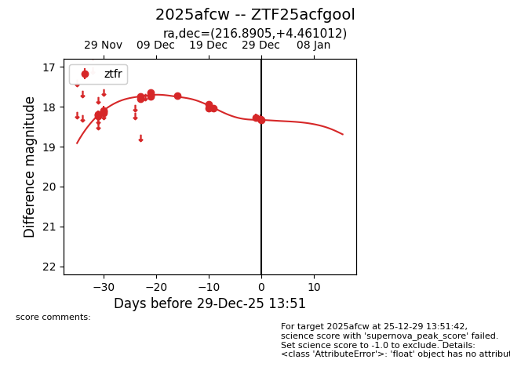
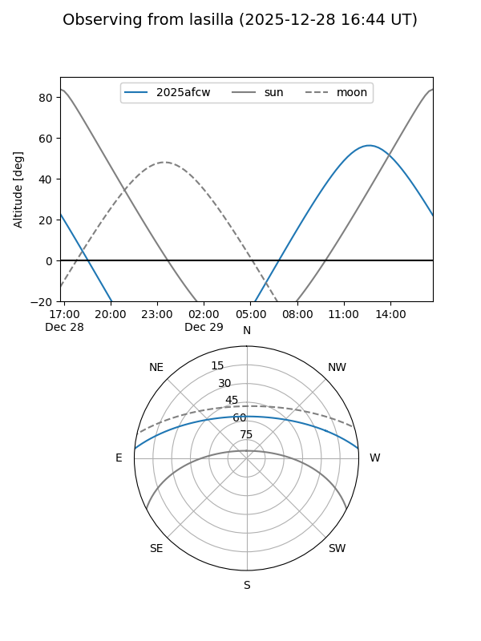
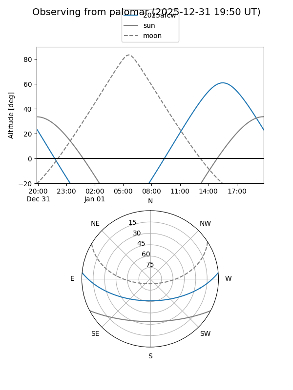
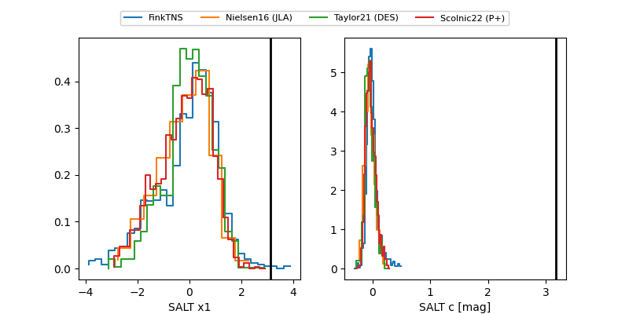

2025afcw
Target 2025afcw at 2025-12-28 13:51
Aliases and brokers:
FINK: fink-portal.org/ZTF25acfgool
Lasair: lasair-ztf.lsst.ac.uk/objects/ZTF25acfgool
ALeRCE: alerce.online/object/ZTF25acfgool
TNS: wis-tns.org/object/2025afcw
YSE: ziggy.ucolick.org/yse/transient_detail/2025afcw
alt names
ZTF25acfgool (ztf,fink_ztf)
2025afcw (tns,yse)
Coordinates:
equatorial (ra, dec) = 216.8905,+4.46101
equatorial (HMS+DMS) = 14:27:33.73,+04:27:39.64
galactic (l, b) = (352.4956,+57.76338)
Flags:
Photometry:
last ztfr=18.27
16 ztfr detections
Lightcurve

Visibility


Additional plots
